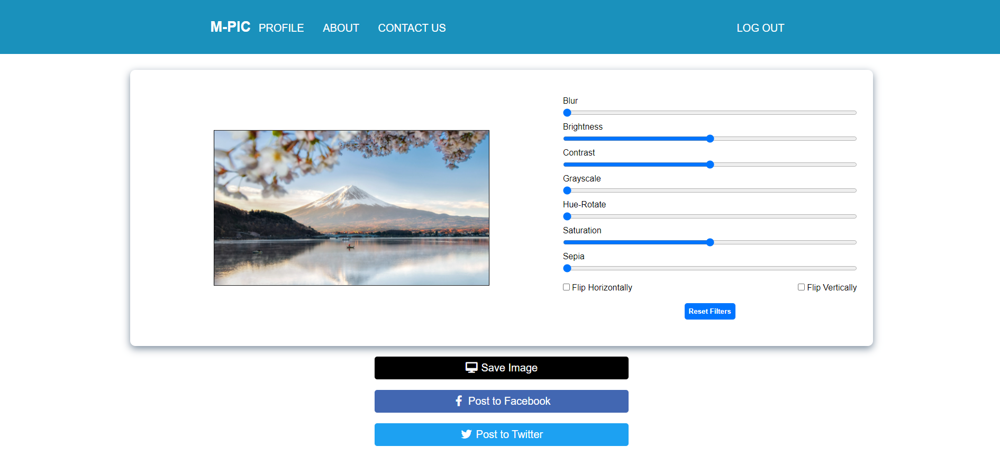

M-PIC - Software Requirements Specification
- Autori
- Avărvărei Bianca, Cotiugă Ionela, Hoamea Vanessa
- Afiliere
- Facultatea de Informatică, Universitatea „Alexandru Ioan” Cuza din Iași
- 1. Introducere
- 1.1 Motivație
- 1.2 Public-țintă
- 1.3 Scop
- 2. Descriere
- 2.1 Perspectivă
- 2.2 Funcționalități
- 2.3 Clase de utilizatori și caracteristici
- 2.4 Mediu de operare
- 2.5 Dependențe
- 3. Cerințe de interfață
- 3.1 Interfața cu utilizatorul
- 3.2 Interfețe hardware
- 3.3 Interfețe software
- 3.4 Interfețe de comunicare
- 4. Caracteristici ale sistemului
- 4.1 Crearea unui cont
- 4.2 Logarea într-un cont existent
- 4.3 Vizualizarea informațiilor despre aplicație din pagina “About”
- 4.4 Vizualizarea informațiilor de contact ale administratorilor din pagina “Contact”
- 4.5 Importarea fotografiilor de pe conturile de Facebook și/sau Twitter ale utilizatorului
- 4.6 Căutarea și filtrarea fotografiilor în funcție de cuvintele cheie prezente în descrierea acestora
- 4.7 Uploadarea de noi fotografii aflate pe device-ul utilizatorului
- 4.8 Editarea unei imagini prin aplicarea sau modificarea următoarelor filtre: blur, brightness, contrast, grayscale, hue-rotate, saturation, sepia
- 4.9 Editarea unei imagini prin oglindirea acesteia orizontal și/sau vertical
- 4.10 Descărcarea noii imagini, cu filtrele alese aplicate pe aceasta
- 4.11 Postarea imaginii pe Facebook și/sau Twitter
- 4.12 Deconectarea de la un cont
- 5. Alte cerințe
1. Introducere
1.1 Motivație
M-Pic este o aplicație web pentru editat imagini, care le permite utilizatorilor să își importe propriile fotografii pe care le au postate pe diferite rețele de socializare, precum Facebook sau Twitter, și să aplice diverse filtre acestora. De asemenea, este posibilă încărcarea de noi fotografii direct de pe device-ul utilizatorului, care subsecvent pot fi editate și fie salvate local, fie postate pe o rețea de socializare la alegerea utilizatorului.
1.2 Public-țintă
Acest document este destinat utilizatorilor aplicației și oferă explicații detaliate despre modul în care este structurată aplicația, toate funcționalitățile acesteia și cerințele pe care un potențial utilizator trebuie să le îndeplinească pentru a o putea folosi.
1.3 Scop
Scopul principal al aplicației este de a ajuta utilizatorii să aplice cu ușurință filtre de editare a fotografiilor pe imaginile alese, precum efecte de estompare și de ajustare a contrastului. Aceste imagini pot fi apoi salvate pe computerul personal al utilizatorului sau postate pe o platformă de socializare aleasă de către utilizator.
2. Descriere
2.1 Perspectivă
Aplicația este un produs nou, de sine stătător, care nu face parte dintr-o familie de produse.
2.2 Funcționalități
- Crearea unui cont
- Logarea într-un cont existent
- Vizualizarea informațiilor despre aplicație din pagina “About”
- Vizualizarea informațiilor de contact ale administratorilor din pagina “Contact”
- Importarea fotografiilor de pe conturile de Facebook și/sau Twitter ale utilizatorului
- Căutarea și filtrarea fotografiilor în funcție de cuvintele cheie prezente în descrierea acestora
- Uploadarea de noi fotografii aflate pe device-ul utilizatorului
- Editarea unei imagini prin aplicarea sau modificarea următoarelor filtre: blur, brightness, contrast, grayscale, hue-rotate, saturation, sepia
- Editarea unei imagini prin oglindirea acesteia orizontal și/sau vertical
- Descărcarea noii imagini, cu filtrele alese aplicate pe aceasta
- Postarea imaginii pe Facebook și/sau Twitter
- Deconectarea de la un cont
2.3 Clase de utilizatori și caracteristici
Aplicația este destinată în special persoanelor pasionate de fotografii și de managementul acestora. Clasa principală însă este reprezentată de tineri, aceștia având cea mai mare activitate pe platformele Facebook și Twitter în ceea ce privește distribuirea și editarea pozelor.
2.4 Mediu de operare
Utilizatorul poate folosi orice platformă hardware, respectiv sistem de operare, ce permite accesul la un browser care îndeplinește cerințele specificate în secțiunea 3.4 Interfețe de comunicare.
2.5 Dependențe
Aplicația se folosește de funcționalitățile puse la dispoziție de către Twitter API și Graph API oferit de Facebook, pentru ca utilizatorii să-și poată prelua fotografiile (împreună cu alte date relevante despre acestea, cum ar fi descrieri sau numărul de like-uri) de pe aceste platforme cu ușurință. În cazul în care aceste API-uri ar suferi modificări semnificative, M-Pic ar deveni, la rândul ei, imposibil de folosit.
3. Cerințe de interfață
3.1 Interfața cu utilizatorul
...
3.2 Interfețe hardware
Aplicația M-Pic respectă principiile design-ului web responsiv, astfel este compatibilă cu dispozitive de orice dimensiune. Ca exemplu, diferența dintre pagina pentru editat fotografii pe desktop (prima imagine), respectiv iPhone 12 Pro (a doua imagine):  Vizualizare desktop Vizualizare iPhone 12 Pro
3.3 Interfețe software
Pentru ca aplicația să funcționeze, este necesară o bază de date MySQL la care să se conecteze serverul, astfel încât să fie posibilă gestionarea conturilor utilizatorilor. Această bază de date se va numi mpic_users, și va conține un tabel numit users, pentru a stoca date despre conturile utilizatorilor aplicației. Codul care trebuie rulat pentru a crea tabelul este următorul:
CREATE TABLE users (
id int(11) PRIMARY KEY AUTO_INCREMENT NOT NULL,
username varchar(50) NOT NULL,
email varchar(320) NOT NULL,
password varchar(100) NOT NULL,
fb_token varchar(2048),
twt_token varchar(2048)
);
3.4 Interfețe de comunicare
Utilizatorul trebuie să folosească orice browser care oferă suport pentru proprietatea filter a API-ului Canvas 2D, altfel filtrele CSS nu vor fi aplicate corect imaginii alese. O listă cu astfel de browsere poate fi găsită aici.
4. Caracteristici ale sistemului
4.1 Crearea unui cont
4.1.1 Descriere
Permite utilizatorului să își creeze un cont. Orice utilizator are nevoie de un cont valid pentru a obține acces la funcționalitățile principale ale aplicației.
4.1.2 Secvențe de stimul/răspuns
Pagina de înregistrare se accesează făcând click pe textul “Sign Up” din antet. După autentificare, această pagină, precum și linkul către ea, vor deveni indisponibile până când utilizatorul se deconectează.
4.1.3 Cerințe funcționale
- Toate câmpurile trebuie completate - în cazul în care cel puțin unul este lăsat gol, se va returna o eroare
empty_input; - Numele de utilizator poată să conțină doar litere ale alfabetului englez și cifre, iar adresa de e-mail introdusă trebuie să fie validă, altfel se va returna o eroare
invalid_username; - Numele de utilizator și adresa de e-mail trebuie să nu fie deja folosite de altcineva, altfel se va returna o eroare
username_taken; - Câmpurile “Password” și “Confirm password” trebuie să fie identice, altfel se va returna o eroare
unmatched_passwords. - În cazul în care baza de date întâmpină probleme, se va returna o eroare
sql_statement_failed;
4.2 Logarea într-un cont existent
4.2.1 Descriere
Permite utilizatorului să se autentifice într-un cont existent, după care obține acces la funcționalitățile principale ale aplicației.
4.2.2 Secvențe de stimul/răspuns
Pagina de autentificare se accesează făcând click pe textul “Log In” din antet. După autentificare, această pagină, precum și linkul către ea, vor deveni indisponibile până când utilizatorul se deconectează.
4.2.3 Cerințe funcționale
- Toate câmpurile trebuie completate - în cazul în care cel puțin unul este lăsat gol, se va returna o eroare
empty_imput; - Numele de utilizator sau adresa de e-mail introduse trebuie să se afle în baza de date (acestea nu sunt case sensitive, e.g. dacă numele de utilizator este johndoe, autentificarea cu JohnDoe sau JOHNDOE este posibilă), altfel se va returna o eroare
wrong_user; - Parola trebuie să fie aceeași cu parola asociată numelui de utilizator/e-mail-ului din baza de date (parola este case sensitive), altfel se va returna o eroare
wrong_password. - În cazul în care baza de date întâmpină probleme, se va returna o eroare
sql_statement_failed;
4.3 Vizualizarea informațiilor despre aplicație din pagina “About”
4.3.1 Descriere
Permite utilizatorului să vizualizeze o scurtă descriere a aplicației M-Pic precum și câteva informații legate despre folosirea acesteia.
4.3.2 Secvențe de stimul/răspuns
Pagina cu informații se accesează făcând click pe textul “About” din antet.
4.4 Vizualizarea informațiilor de contact ale administratorilor din pagina “Contact”
4.4.1 Descriere
Permite utilizatorului vizualizeze informațiile de contact, cum ar fi adresele de e-mail, ale administratorilor sitului.
4.4.2 Secvențe de stimul/răspuns
Pagina de contact se accesează făcând click pe textul “Contact Us” din antet.
4.5 Importarea fotografiilor de pe conturile de Facebook și/sau Twitter ale utilizatorului
4.5.1 Descriere
Permite utilizatorului să își importe fotografiile postate pe aceste două rețele de socializare în aplicație, după care devine posibilă vizualizarea, filtrarea și editarea acestora.
4.5.2 Secvențe de stimul/răspuns
Pe pagina de profil, utilizatorul apasă butonul “Connect Account” fie în secțiunea Facebook, fie în secțiunea Twitter, după cum dorește. După ce utilizatorul a autorizat aplicația să îi preia datele, pozele (împreună cu un nou buton, “Disconnect Account”) vor apărea automat în locul butonului “Connect Account”.
4.5.3 Cerințe funcționale
- Utilizatorul trebuie să fie autentificat într-un cont valid;
- Utilizatorul nu trebuie să fi autorizat deja aplicația să aibă acces la datele din contul de Facebook, respectiv Twitter. Totuși, dacă dorește să își schimbe contul, poate face acest lucru prin apăsarea butonului “Disconnect Account”, apoi “Connect Account”, autentificându-se cu contul dorit.
4.6 Căutarea și filtrarea fotografiilor în funcție de cuvintele cheie prezente în descrierea acestora
4.6.1 Descriere
Permite utilizatorului să se autentifice să filtreze pozele importate în funcție de descrierile acestora (de asemenea preluate direct din contul de Facebook/Twitter ales de către utilizator). Spre exemplu, dacă un utilizator ar scrie “summer” în câmpul de căutare, s-ar afișa doar acele fotografii care conțin cuvântul “summer” în descrierea lor. Dacă astfel de fotografii nu există, nu se va afișa nimic.
4.6.2 Secvențe de stimul/răspuns
Pe pagina de profil, utilizatorul introduce cuvintele cheie dorite în câmpul de căutare, iar filtrarea se va face automat.
4.6.3 Cerințe funcționale
- Utilizatorul trebuie să fie autentificat într-un cont valid;
- Utilizatorul trebuie să fi importat deja pozele dorite pentru a le putea filtra.
4.7 Uploadarea de noi fotografii aflate pe device-ul utilizatorului
4.7.1 Descriere
Permite utilizatorului să încarce imagini pe care nu le are pe nici o platformă de socializare direct în aplicație, pentru a le edita, salva și/sau posta pe o rețea de socializare.
4.7.2 Secvențe de stimul/răspuns
Pe pagina de profil, utilizatorul selectează butonul “Add Photo” și își alege fotografia dorită, după care este redirectat către pagina de editare.
4.7.3 Cerințe funcționale
Utilizatorul trebuie să fie autentificat într-un cont valid.
4.8 Editarea unei imagini prin aplicarea sau modificarea următoarelor filtre: blur, brightness, contrast, grayscale, hue-rotate, saturation, sepia
4.8.1 Descriere
Permite utilizatorului să aplice filtrele menționate asupra unei fotografii alese pentru a-i modifica aparența.
4.8.2 Secvențe de stimul/răspuns
Pe pagina de profil, utilizatorul apasă butonul “edit” din dreptul fotografiei dorite, și este redirectat către editorul de poze. Alternativ, utilizatorul poate încărca o nouă fotografie direct de pe dispozitivul său pentru editat, cum este menționat mai sus.
4.8.3 Cerințe funcționale
Utilizatorul trebuie să fie autentificat într-un cont valid.
4.9 Editarea unei imagini prin oglindirea acesteia orizontal și/sau vertical
4.9.1 Descriere
Permite utilizatorului să oglindească o fotografie aleasă.
4.9.2 Secvențe de stimul/răspuns
Pe pagina de profil, utilizatorul apasă butonul “edit” din dreptul fotografiei dorite, și este redirectat către editorul de poze. Alternativ, utilizatorul poate încărca o nouă fotografie direct de pe dispozitivul său pentru editat, cum este menționat mai sus.
4.9.3 Cerințe funcționale
Utilizatorul trebuie să fie autentificat într-un cont valid.
4.10 Descărcarea noii imagini, cu filtrele alese aplicate pe aceasta
4.10.1 Descriere
Permite utilizatorului să descarce pe dispozitivul său imaginea pe care o editase, cu toate modificările aplicate.
4.10.2 Secvențe de stimul/răspuns
Pe pagina de editare a fotografiilor, după aplicarea filtrelor dorite, utilizatorul apasă butonul “Save Image” și confirmă faptul că vrea să descarce imaginea.
4.10.3 Cerințe funcționale
Utilizatorul trebuie să fie autentificat într-un cont valid.
4.11 Postarea imaginii pe Facebook și/sau Twitter
4.11.1 Descriere
Permite utilizatorului să posteze pe conturile de Facebook și Twitter imaginea pe care o editase, cu toate modificările aplicate.
4.11.2 Secvențe de stimul/răspuns
Pe pagina de editare a fotografiilor, după aplicarea filtrelor dorite, utilizatorul apasă butonul “Post to Facebook”, respectiv “Post to Twitter”, și confirmă faptul că autorizează postarea.
4.11.3 Cerințe funcționale
Utilizatorul trebuie să fie autentificat într-un cont valid.
4.12 Deconectarea de la un cont
4.12.1 Descriere
Permite utilizatorului să se deconecteze de la contul cu care este autentificat în acel moment.
4.12.2 Secvențe de stimul/răspuns
Deconectarea se efectuează făcând click pe textul “Log Out” din antet, sau pe butonul “Log Out” din pagina de profil. După aceasta, utilizatorul este redirectat către pagina principală.
4.12.3 Cerințe funcționale
Utilizatorul trebuie să fie autentificat într-un cont valid.
5. Alte cerințe
Utilizatorul trebuie să aibă o adresă de e-mail validă pentru a-și putea crea un cont pe site, care să-i permită să folosească funcționalitățile oferite de aplicație. Opțional, utilizatorul trebuie să își facă un cont WordPress cu adresa de e-mail asociată contului M-Pic, dacă acesta dorește să își schimbe poza de profil, lucru ce poate fi realizat prin intermediul API-ului Gravatar.